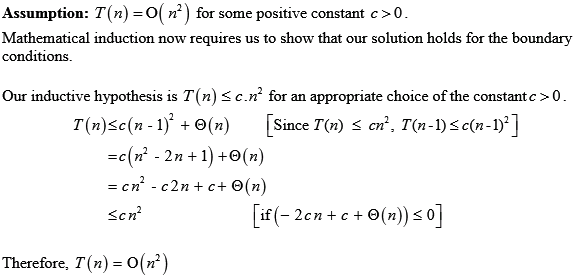
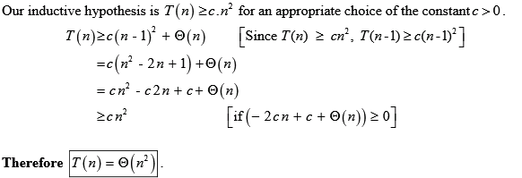

In the QUICKSORT procedure, A is an array of n elements, p is the first index in the array, and r is the last index in the array.
• All values in the array are the same. The QUICKSORT procedure calls the PARTITION procedure every time if the condition is satisfied.
• For each call of PARTITION procedure, the condition in the PARTITION procedure always satisfies and the variable i increments every time. This yields the worst case partitioning.
• An array looks like sorted in non-descending order when all elements in array are the same.
• If the number of elements in the array is n, p =
0 and r = n - 1, then the PARTITION procedure returns
 for the first call,
for the first call,  for the
second call and so on as the value of pivot index q.
for the
second call and so on as the value of pivot index q.
• Each recursive call of the PARTITION procedure produces two
sub-problems, one sub-problem contains elements
and other sub-problem contains 0 elements. And each recursive call
produces an unbalanced partioning and its cost is  .
.
Therefore, the total running time of QUICKSORT procedure is,
Therefore, the total running time of the QUICKSORT procedure
when all the elements is, .
.
When the elements are in decreasing order, PARTITION procedure performs a ’worst – case partitioning’.
• At each step, the size of the sub-array is reduced by 1. It has the running time of.
• When a subarray A[p..r] in which the elements are distinct and are in descending order is given to PARTITION procedure, it outputs an empty partition A[p..q-1], places the pivot into A[p] which is originally in A[r] and outputs a partition A[p+1..r].
• Thus at each step, it outputs a partition a A[p+1..r] which has only one element less than the subarray A[p..r].
• The recurrence for QUICKSORT becomes .
Hence the running time of QUICKSORT is.
The problem of converting time-of-transaction ordering to check-number ordering is the problem of sorting almost sorted input.
• The INSERTION-SORT takes time to
sort an input that is already sorted. Hence, the INSERTION-SORT
will take to sort an
input that is almost sorted.
• The QUICK-SORT takes  time to
sort an input that is already sorted. Hence, the QUICK -SORT will
take to sort an
input that is almost sorted.
time to
sort an input that is already sorted. Hence, the QUICK -SORT will
take to sort an
input that is almost sorted.
Hence, it can be concluded by considering the running times that for the problem of converting time-of-transaction ordering to check-number ordering, performance of INSERTION-SORT is better than QUICK-SORT.

In Quicksort, for any random input array the best case occurs when an array is split with 0.1 to 0.9 ratio.
For example, if 9:1 or better split is required then compute the values as:
Probability
It means that if the split has the constant that is,  proportionality,
then the run time will be .
proportionality,
then the run time will be .
It can be shown that for a random input array the probability
that the partition is better than to  for
is
.
for
is
.
In Randomized Quicksort, for a random input the pivot element can be in any position of the array after a partition.
If the pivot element is within the position , then the split or the partition is more balanced.
Proof: The PARTITION produces a split more balanced than
to
,
if
,where m represents the number of entries of the array which
lie within the range and are less than the other elements of the
array.
The probability that on a random input array, PARTITION produces
a split more balanced than to
,
can be computed as follows: